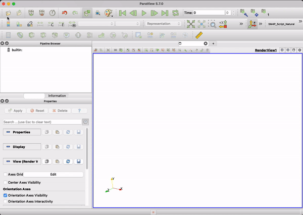
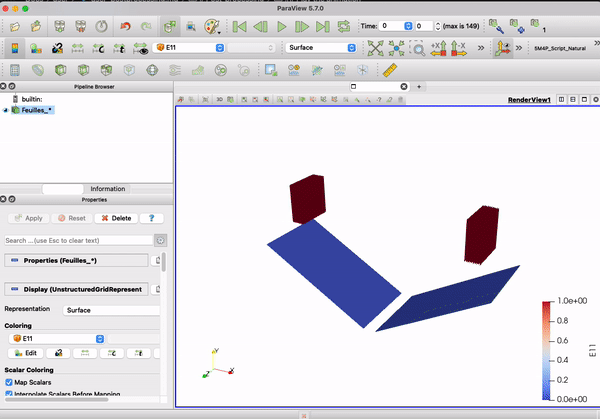
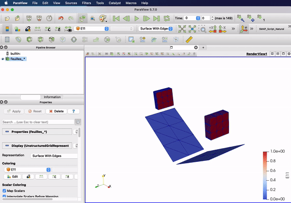

Postprocessing
Post-processing#
After successfully running a COMFOR simulation, results are available in various formats for analysis and visualization. This section explains how to access, visualize, and analyze your simulation results.
Generated Result Files#
Directory Structure#
For an input file simulation.toml with an output named fields and two trackers named PunchForce and CenterPosition:
Project_Folder/
├── simulation.toml # Input file
├── simulation.md # Job log
└── Results_simulation/ # Result root (or the path given with -o)
├── manifest.toml # Run status and list of files
├── fields/ # One folder per [[output]], named after it
│ ├── fields_000000.vtu
│ ├── fields_000001.vtu
│ └── ...
├── PunchForce.csv # One CSV file per [tracker], named after it
└── CenterPosition.csv
- Frames are written every
frequencytime units and numbered with 6 digits, starting at000000(initial state). - When several
[[output]]blocks are defined, each one writes in its own folder.
Run Manifest#
manifest.toml is updated during the run. Its status is running during the simulation, then completed or failed. It also lists every file written (path, format and size):
schema_version = 1
status = 'completed'
[[artifacts]]
channel_id = 'fields'
format = 'vtu'
path = 'fields/fields_000000.vtu'
size = 34305
Checking status = 'completed' is a simple way to verify, in a script, that a simulation ended normally.
Job Log#
The job log simulation.md is a Markdown file written next to the input file. It contains the file information, the validation report (with the list of errors if any), the model summary and the energies printed at each output frame. See Running the Analysis.
Output Formats#
VTU Format (Recommended)#
VTU (XML Unstructured Grid) is the recommended output format for COMFOR. Legacy VTK is still supported. Both are industry standards for scientific visualization.
| Feature | VTU | VTK (legacy) |
|---|---|---|
ASCII encoding |
Yes | Yes |
BINARY encoding (zlib compressed) |
Yes | No |
| Element results (strain, stress, fibers, resultants) | Yes | Yes |
Identifiers (MaterialID, PartID, PartInstanceID) |
Yes | No |
Configuration example:
[[output]]
name = "fields"
type = "VTU"
format = "BINARY" # or "ASCII"
frequency = 0.1 # Write every 0.1 time units
Recommendation
Use BINARY for production simulations to reduce file size. Use ASCII to inspect the files with a text editor.
Data Included in VTU Files#
Nodal Data (Point Data)#
| Data | Components | Description |
|---|---|---|
Displacement |
3 | Displacement \([u_x, u_y, u_z]\) |
Velocity |
3 | Velocity \([v_x, v_y, v_z]\) |
Acceleration |
3 | Acceleration \([a_x, a_y, a_z]\) |
Force |
3 | Resultant nodal force |
ContactForce |
3 | Nodal contact force |
SlidingVelocity |
3 | Contact sliding velocity |
The node coordinates are stored as the mesh points (Position in the file).
Element Data (Cell Data)#
| Data | Components | Description |
|---|---|---|
MaterialID |
1 | Material identifier |
PartID |
1 | Part identifier, starting at 0, in alphabetical order of the part names ([part.Name] syntax) |
PartInstanceID |
1 | Instance identifier inside a part (see pattern) |
Strain |
6 | Strain in the element local frame |
GreenLagrangeStrain |
6 | Green-Lagrange strain tensor |
DeformationGradient |
9 | Deformation gradient \(\mathbf{F}\) |
CauchyStress |
6 | Cauchy stress tensor |
ShearAngle |
1 | In-plane shear angle of the fabric (composite materials) |
FiberStrain |
2 | Strain along the warp and weft directions (composite materials) |
FiberStress |
2 | Stress along the warp and weft directions (composite materials) |
FiberCurvature |
2 | Curvature along the warp and weft directions (composite materials) |
FiberOrientationWarp |
3 | Current warp direction (composite materials) |
FiberOrientationWeft |
3 | Current weft direction (composite materials) |
ResultantN |
3 | Membrane force resultants \(N_{xx}, N_{yy}, N_{xy}\) (shell sections) |
ResultantM |
3 | Bending moment resultants \(M_{xx}, M_{yy}, M_{xy}\) (shell sections) |
ResultantQ |
2 | Transverse shear resultants \(Q_x, Q_y\) (shell sections) |
Unavailable values
A field that does not apply to an element is written as NaN for that element: for instance all the stress and strain fields of rigid contact elements, or the fiber fields of non-composite materials. ParaView shows these elements with the NaN color and ignores them in the data range.
Tensor Components#
| Field | Component order | ParaView labels |
|---|---|---|
CauchyStress, GreenLagrangeStrain |
xx, yy, zz, xy, yz, xz |
Identical |
DeformationGradient |
xx, xy, xz, yx, yy, yz, zx, zy, zz |
Identical |
Strain |
C11, C22, C33, C23, C13, C12 |
XX, YY, ZZ, XY, YZ, XZ |
Components of Strain
ParaView labels the components of Strain with its own convention: the component displayed as XY is C23, YZ is C13 and XZ is C12. The same component names (C11...C12) are used by the STRAIN element tracker.
In legacy VTK files, the element fields are written as a FIELD block with the same names and component orders.
Visualization with ParaView#
ParaView is the recommended visualization tool for COMFOR results.
Load the Files#
Click on File → Open and navigate to the folder of your output (e.g. Results_simulation/fields/). Since COMFOR names files in ascending order (fields_..vtu), ParaView automatically proposes to open them as a file group (time series).

Play the Animation#
After opening the files, they appear in the Pipeline Browser. Click the Apply button in the Properties section to render the mesh.
Workflow Hint
To save time, activate Auto Apply in Edit → Settings → General → Properties Panel Options.
To play the animation, use the Play button on the VCR toolbar. You can navigate frame by frame, loop the animation, or jump to specific time steps using the time toolbar.
The data to be displayed can be selected in the Coloring dropdown menu of the Properties panel. You can visualize nodal data (e.g. Displacement) or element data (e.g. CauchyStress, ShearAngle), and choose the component or the magnitude.

Deformed shape
The mesh points are written at their current position: the geometry displayed in ParaView is already the deformed one. The Displacement field can be used to color the mesh, or with the Warp By Vector filter to amplify the deformation.
Applying Filters#
ParaView provides a wide range of filters to process and analyze simulation data. Filters can be stacked in the Pipeline Browser to combine effects.
Commonly used filters for COMFOR simulations:
| Filter | Use |
|---|---|
Threshold |
Extract the elements whose value lies in a range (e.g. PartID to isolate a part, or ShearAngle to find the highly sheared zones) |
Connectivity |
Identify connected regions, e.g. to separate the tools from the composite plates |
Cell Data to Point Data |
Average element data at the nodes (smoother contour plots) |
Warp By Vector |
Amplify a deformation using a vector field |
Temporal Interpolator |
Interpolate between frames, for smooth animations |
Plot Data Over Time |
Plot the time evolution of a selection |
Plot Data |
Plot data arrays, e.g. the content of a tracker CSV file |

CSV Files (Trackers)#
Trackers record the time history of specific variables in CSV files, one file per tracker: <result_root>/<tracker_name>.csv. A row is written each time an output frame is written.
CSV File Format#
- Header line:
Time, one column per tracked entity, thenTotal - Separator: comma followed by a space (
,) - Total: sum of the values of all tracked entities
Example (NODE tracker, variable = "FORCE", direction = "Z"):
Time, Node 101, Node 102, Node 103, Total
0, 0, 0, 0, 0
0.1, 50.2, 48.7, 52.1, 151
0.2, 100.5, 95.3, 105.8, 301.6
Example (ELEMENT tracker, variable = "CAUCHY_STRESS", component = "xx"):
Time, Element 50, Element 51, Element 52, Total
0, 0, 0, 0, 0
0.1, 15.2, 18.1, 14.5, 47.8
0.2, 20.1, 22.5, 19.8, 62.4
CSV Analysis with Python#
import pandas as pd
import matplotlib.pyplot as plt
# skipinitialspace removes the space after each comma
df = pd.read_csv('Results_simulation/PunchForce.csv', skipinitialspace=True)
plt.plot(df['Time'], df['Total'], label='Punch force')
plt.xlabel('Time')
plt.ylabel('Force')
plt.grid(True)
plt.legend()
plt.show()
Force-displacement curve, with a NODE tracker on the punch force and a POSITION tracker on a punch node:
force = pd.read_csv('Results_simulation/PunchForce.csv', skipinitialspace=True)
position = pd.read_csv('Results_simulation/PunchPosition.csv', skipinitialspace=True)
# Punch displacement from its initial position
displacement = position['Total'].iloc[0] - position['Total']
plt.plot(displacement, force['Total'])
plt.xlabel('Punch displacement')
plt.ylabel('Punch force')
plt.show()
The corresponding trackers:
[tracker.PunchForce]
type = "NODE"
variable = "FORCE"
direction = "Z"
set = "PunchNodes"
[tracker.PunchPosition]
type = "NODE"
variable = "POSITION"
direction = "Z"
nodes = [50]
The CSV files can also be opened directly in ParaView (with the Plot Data filter), Excel or LibreOffice Calc.
Troubleshooting#
| Issue | Solution |
|---|---|
| No time series detected in ParaView | Open the files from the output folder (Results_<name>/<output_name>/) and select the ..vtu group |
A Strain component is not the expected one |
Check the component order (see Tensor Components) |
| Some elements are drawn with the NaN color | The field does not apply to these elements (e.g. rigid tools, fiber fields of non-composite materials) |
KeyError: 'Total' with pandas |
Use skipinitialspace=True in read_csv |
manifest.toml status is failed |
Read the error at the end of the job log (<input_name>.md) |
Resources#
For in-depth ParaView training, consult these resources: